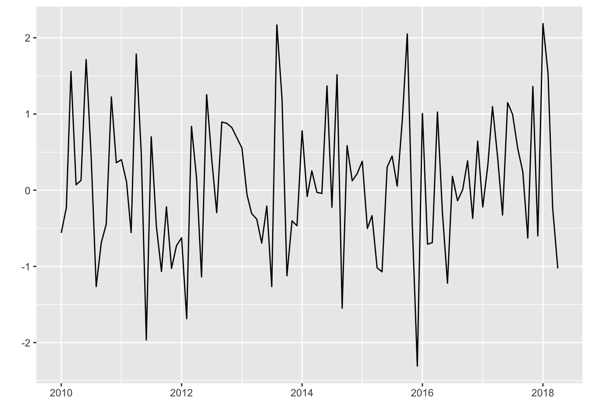
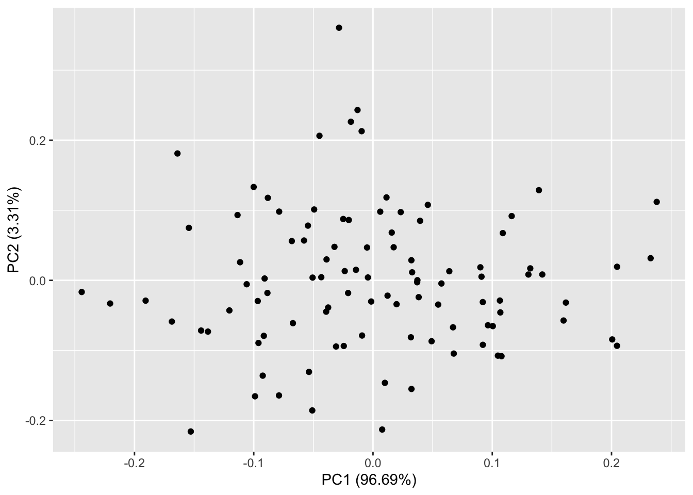
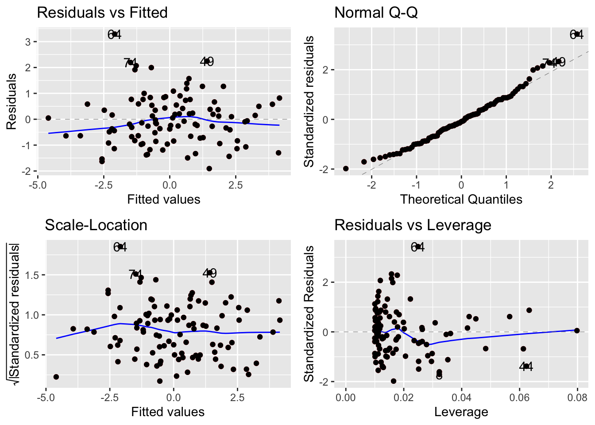

Chapter 6 R 绘图
6.2 使用 Plotly 创建交互式图表
Plotly 是一个功能强大的工具，可以用来创建交互式图表和可视化。在R中，通过 Plotly 包，你可以轻松地创建各种类型的图表，并且能够在浏览器中进行交互。下面是一个简单的教程，带你一步一步学习如何在R中使用Plotly。
首先，你需要安装并加载 Plotly 包。你可以通过以下代码在R中完成这一步骤：
## Loading required package: ggplot2##
## Attaching package: 'plotly'## The following object is masked from 'package:ggplot2':
##
## last_plot## The following object is masked from 'package:stats':
##
## filter## The following object is masked from 'package:graphics':
##
## layout让我们从创建一个简单的散点图开始。我们将使用内置的鸢尾花数据集进行演示。
# 加载鸢尾花数据集
data(iris)
# 创建散点图
plot_ly(data = iris, x = ~Sepal.Length, y = ~Sepal.Width, type = "scatter", mode = "markers")通过 Plotly，你可以轻松地添加样式和交互性。比如，你可以修改点的颜色、大小和形状，并添加标题、标签等。
# 添加样式和交互性
plot_ly(data = iris, x = ~Sepal.Length, y = ~Sepal.Width, color = ~Species,
type = "scatter", mode = "markers",
marker = list(size = 10, symbol = "circle"),
text = ~paste("Species: ", Species),
hoverinfo = "text") %>%
layout(title = "Sepal Length vs. Sepal Width",
xaxis = list(title = "Sepal Length"),
yaxis = list(title = "Sepal Width"))最后，你可以将生成的图表导出为图片或HTML文件，也可以嵌入到网页中。
# 导出图表为 HTML 文件
export_html <- plot_ly(data = iris, x = ~Sepal.Length, y = ~Sepal.Width, color = ~Species,
type = "scatter", mode = "markers",
marker = list(size = 10, symbol = "circle"),
text = ~paste("Species: ", Species),
hoverinfo = "text") %>%
layout(title = "Sepal Length vs. Sepal Width",
xaxis = list(title = "Sepal Length"),
yaxis = list(title = "Sepal Width"))
# htmlwidgets::saveWidget(export_html, "plotly_example.html")总结绘制其他图形:
- 散点图
# 创建散点图
plot_ly(data = iris, x = ~Sepal.Length, y = ~Sepal.Width, color = ~Species,
type = "scatter", mode = "markers",
marker = list(size = 10, symbol = "circle"),
text = ~paste("Species: ", Species),
hoverinfo = "text") %>%
layout(title = "Sepal Length vs. Sepal Width",
xaxis = list(title = "Sepal Length"),
yaxis = list(title = "Sepal Width"))- 折线图
# 创建折线图
plot_ly(data = iris, x = ~Sepal.Length, y = ~Petal.Length, color = ~Species,
type = "scatter", mode = "lines",
line = list(width = 1),
text = ~paste("Species: ", Species),
hoverinfo = "text") %>%
layout(title = "Sepal Length vs. Petal Length",
xaxis = list(title = "Sepal Length"),
yaxis = list(title = "Petal Length"))- 柱状图
# 创建柱状图
plot_ly(data = iris, x = ~Species, y = ~Sepal.Length,
type = "bar",
marker = list(color = "blue"),
text = ~paste("Species: ", Species),
hoverinfo = "text") %>%
layout(title = "Average Sepal Length by Species",
xaxis = list(title = "Species"),
yaxis = list(title = "Average Sepal Length"))- 箱线图
# 创建箱线图
plot_ly(data = iris, x = ~Species, y = ~Petal.Width,
type = "box",
marker = list(color = "green"),
text = ~paste("Species: ", Species),
hoverinfo = "text") %>%
layout(title = "Distribution of Petal Width by Species",
xaxis = list(title = "Species"),
yaxis = list(title = "Petal Width"))- 饼图
# 创建饼图
plot_ly(data = iris, labels = ~Species, values = ~Sepal.Length,
type = "pie",
marker = list(colors = c("red", "green", "blue")),
text = ~paste("Species: ", Species),
hoverinfo = "text") %>%
layout(title = "Distribution of Sepal Length by Species")- 3D 散点图
# 创建3D散点图
plot_ly(data = iris, x = ~Sepal.Length, y = ~Sepal.Width, z = ~Petal.Length,
color = ~Species,
type = "scatter3d", mode = "markers",
marker = list(size = 5),
text = ~paste("Species: ", Species),
hoverinfo = "text") %>%
layout(title = "3D Scatter Plot of Sepal and Petal Dimensions",
scene = list(xaxis = list(title = "Sepal Length"),
yaxis = list(title = "Sepal Width"),
zaxis = list(title = "Petal Length")))- 热力图
# 创建热力图
heatmap_data <- as.matrix(iris[, 1:4])
plot_ly(z = ~heatmap_data, colorscale = "Viridis", type = "heatmap") %>%
layout(title = "Heatmap of Iris Dataset",
xaxis = list(title = "Features"),
yaxis = list(title = "Observations"))6.2.1 ggplot 图和plotly 图转换
# 导入所需的包
library(ggplot2)
library(plotly)
# 创建一个 ggplot 图
gg <- ggplot(data = iris, aes(x = Sepal.Length, y = Sepal.Width, color = Species)) +
geom_point() +
labs(title = "Sepal Length vs. Sepal Width",
x = "Sepal Length",
y = "Sepal Width",
color = "Species")
# 将 ggplot 图转换为 plotly 图
p <- ggplotly(gg)
# 在浏览器中显示 plotly 图
p6.3 ggfortify
ggfortify可用于在 R 中绘制不同类型的统计图表。
接下来，我们将介绍如何使用 ggfortify 包绘制时间序列数据的折线图。首先，让我们生成一些示例数据：
现在，我们可以使用 ggfortify 中的 autoplot 函数绘制时间序列数据的折线图：
 如果要自定义图形，可以添加额外的图层或修改默认参数。例如，我们可以添加标题和修改坐标轴标签：
# 自定义图形
autoplot(time_series_data) +
ggtitle("Example Time Series Plot") +
xlab("Year") +
ylab("Value")
继续介绍 ggfortify 包的其他功能，包括主成分分析（PCA）和线性回归分析。首先，让我们生成一些示例数据用于 PCA 和线性回归分析：
使用 ggfortify 包中的 autoplot 函数可以直观地可视化主成分分析的结果。下面是如何进行主成分分析并绘制结果的示例：

这将绘制一个散点图，其中数据点被投影到主成分空间中。你可以看到数据点在主成分上的分布情况，以及主成分的方差解释比例。
使用 ggfortify 包，你可以将线性回归模型的结果可视化为散点图和拟合直线。下面是一个示例：
# 拟合线性回归模型
lm_model <- lm(y ~ x, data = data)
# 可视化线性回归结果
autoplot(lm_model, data = data, colour = 'red') +
geom_point()
这将绘制一个散点图，数据点用蓝色表示，拟合的线性回归直线用红色表示。你可以很清楚地看到数据点的分布情况以及回归直线的拟合效果。